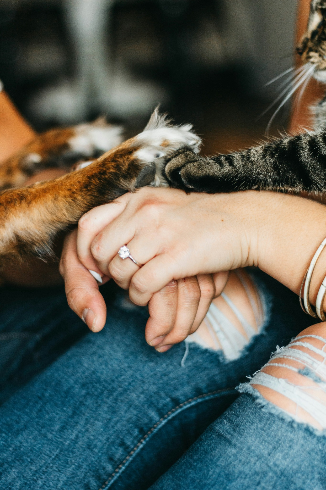
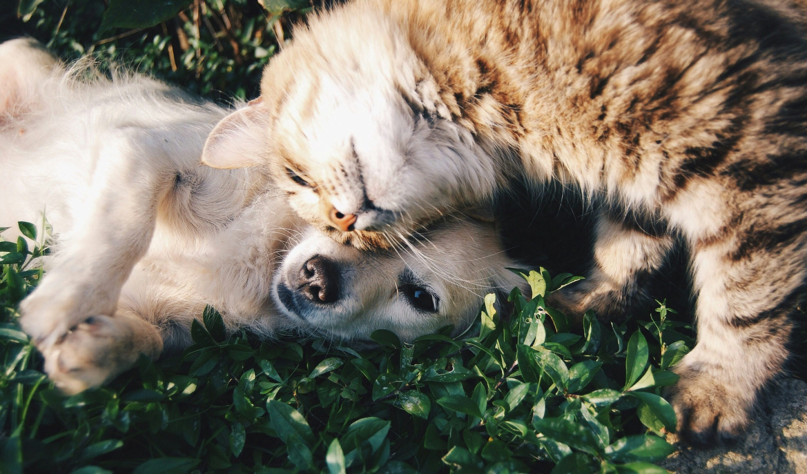

반려동물의 감정과 통증, 이제는 기술로 들을 수 있습니다.
우리와 함께 살아가는 반려동물은 말하지 못합니다. 하지만 그들의 감정은 뇌파를 통해 표현됩니다. NEUROPET은 털실모자 형태의 센서를 통해 뇌파를 측정하고, AI로 실시간 분석하여 감정 상태를 보호자에게 전달합니다.
NEUROPET은 감정뿐 아니라 통증 신호도 탐지합니다. 슬픔, 불안, 통증의 패턴을 구분하여, 반려동물이 더 심하게 아프기 전에 병원에 갈 수 있도록 도와줍니다.
보호자에게는 반려동물의 마음을 이해할 수 있는 감성적인 연결을, 수의사에게는 객관적인 진료 보조 자료를, 동물병원에는 프리미엄 진료 서비스로 고객 만족도를 높이는 새로운 기회를 제공합니다.
